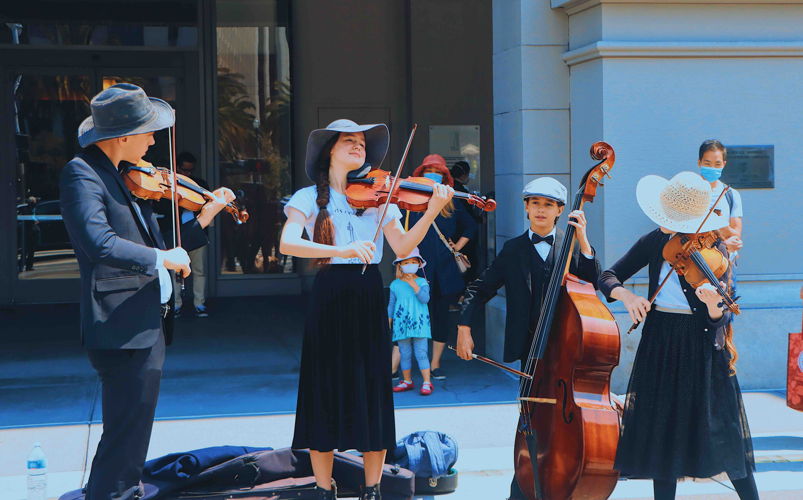
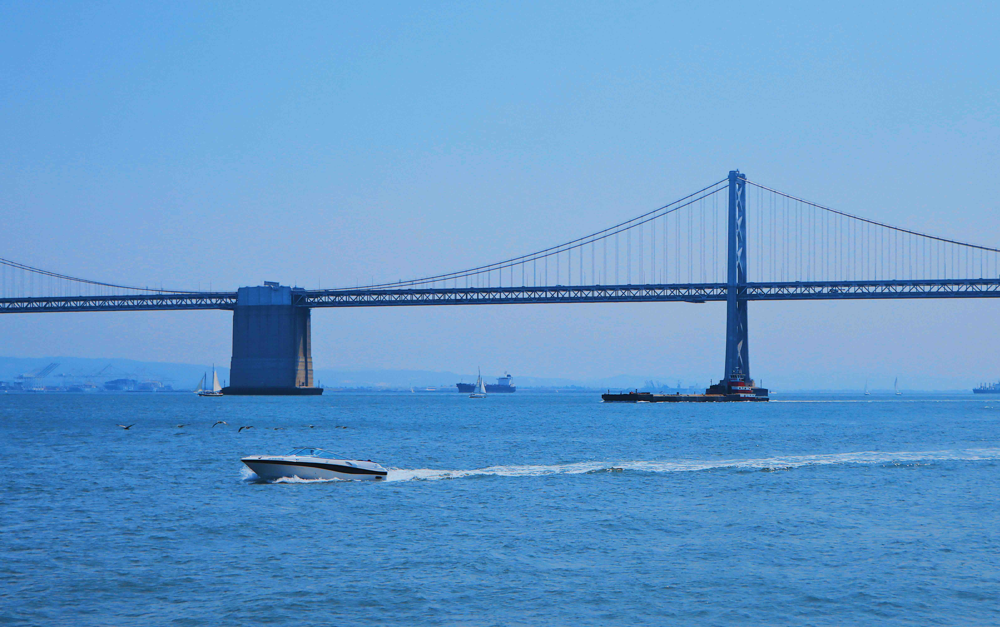
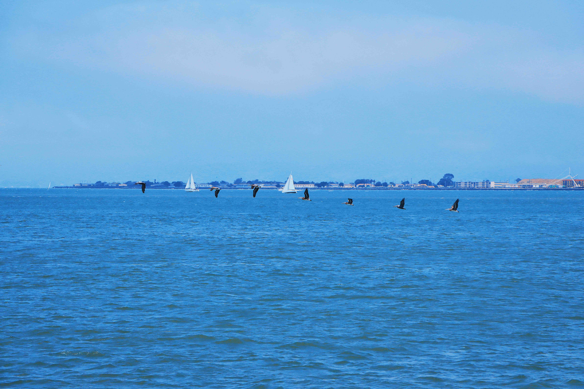
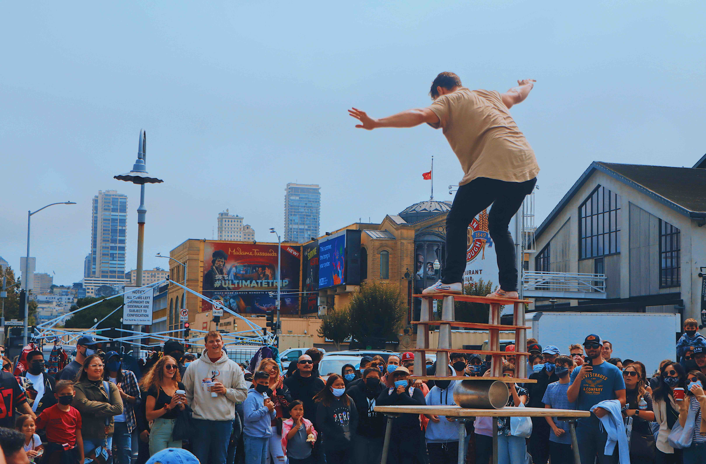
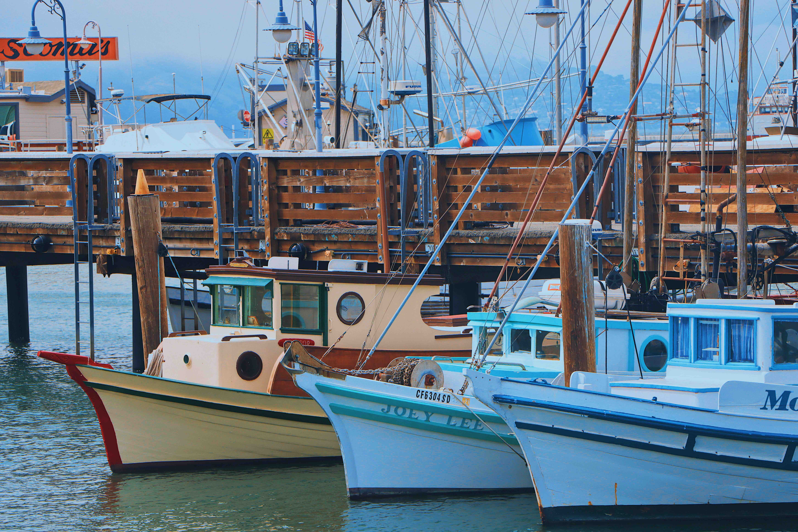
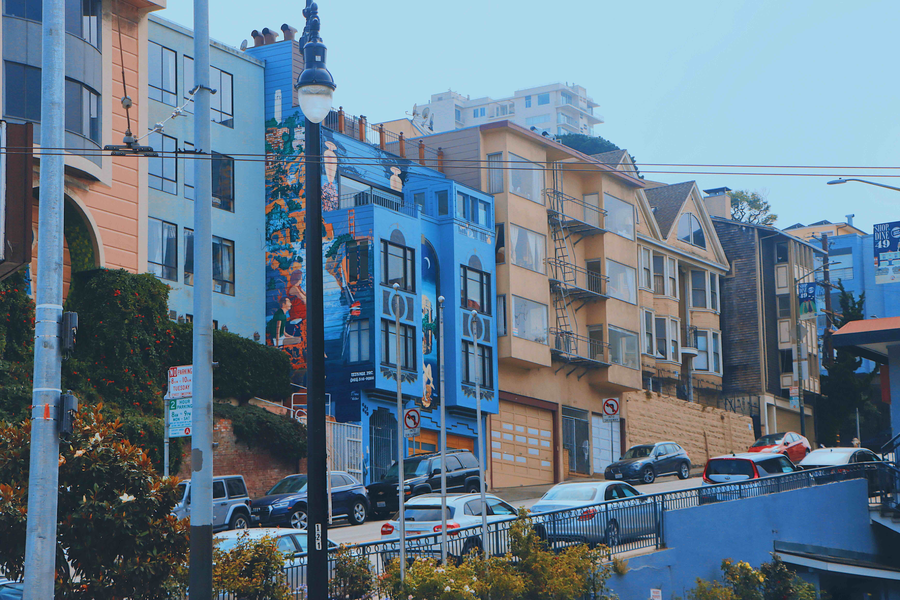
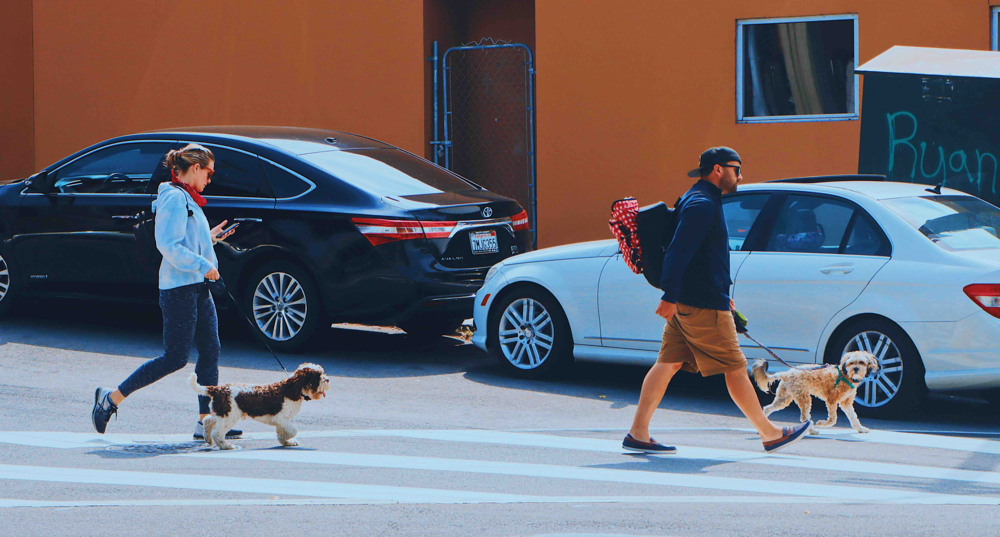

San Francisco - Advancing My Journey
Studying, evolving, and preparing to step into the future I envision.
Coming to San Francisco marked the beginning of a new, exciting chapter in my life. I enrolled in the Master of Science in Business Analytics (MSBA) program, eager to dive deeper into the world of data and technology. Every day here is a step forward toward becoming the data scientist I aspire to be.
The program has challenged me to grow in multiple dimensions: mastering advanced programming languages, building predictive machine learning models, understanding big data architecture, and visualizing insights in ways that empower business decisions.
As I deepen my technical expertise, I also continue to build the other pillars of a successful data scientist: strong communication skills, critical and strategic thinking, an ethical mindset for responsible AI use, adaptability in fast-changing environments, and the relentless curiosity to never stop learning.
 San Francisco itself has been an incredible environment for this growth. Surrounded by innovation, startups, and global companies, I find endless inspiration to push boundaries, think creatively, and challenge myself both personally and professionally.
 Here in San Francisco, I am not just studying — I am building the mindset, habits, and skillsets of the data scientist I want to become: one who can turn complexity into clarity, numbers into narratives, and ideas into impact.
 